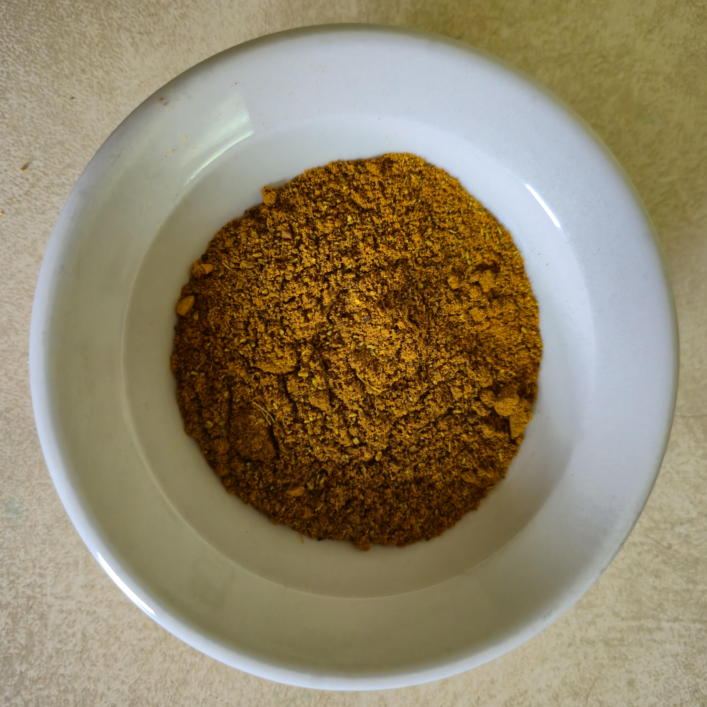

Creative Microdose #4
The Spice Blend
The value is not hidden in the spice blend. It is hidden in the chain that produced it.
Sri Lankan grocery → whole nutmeg → curiosity → grinding → spice blend → breakfast ritual
Photographs. Notes. Screenshots. Field observations. Strange objects. Recurring questions. Half-finished projects.
The things that repeatedly capture your attention may not be random.
Ontological Praxis is a practice of perception.
It begins with a simple assumption: attention is evidence.
The photograph you keep returning to. The sentence you copied into a notebook. The object you could not stop looking at. The idea that refuses to leave.
These fragments may contain patterns that are difficult to see from the inside.
Notice what catches.
Follow it one step further.
Name the chain of attention.
Convert the fragment into possible form.
Small exercises in attention.
A Creative Microdose begins with something ordinary and follows it one step further than usual. Not to make a masterpiece. To strengthen perception.

The value is not hidden in the spice blend. It is hidden in the chain that produced it.
Sri Lankan grocery → whole nutmeg → curiosity → grinding → spice blend → breakfast ritual
Some fragments arrive disguised as mistakes.
Soy sauce → spellcheck error → “spy sauce” → espionage mood → condiment under interrogation → photographic artifact
The exercise is learning to notice what remains after something disappears.
Asphalt → water stain → evaporation → residue → accidental drawing → attention trace

A field manual for converting recurring attention, private fragments, and unfinished ideas into public artifacts.

A book about perception, status, boundaries, taste, and the hidden contracts inside ordinary relationships.
When someone refuses the ordinary contract, are they being an asshole—or are they protecting the conditions that make art possible?
A custom report on the recurring signals, themes, patterns, and possible forms hidden inside your fragments.
Send 5–15 pieces of material: photographs, notes, screenshots, sketches, unfinished ideas, recurring questions, or strange things you keep saving.
The fragments do not need to be polished. They do need to feel charged.
This is not coaching. This is not therapy. This is not productivity advice.
It is a structured reading of the material your attention has already gathered.
“I got real insight into myself through this process. I feel seen and understood on a deep level.”
ontologicalpraxis@proton.me
Request a Signal Read